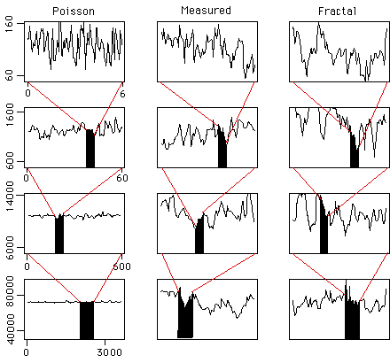

| Willinger and Paxson studied the statistics of internet traffic. |
| They compared real data - an hour of net traffic at a large corporation, with a Poisson model of the same mean and standard deviation as the data, and with a fractal model of the same characteristics. |
| Pictures in the top row are 6 seconds in 100 msec intervals. |
| In the second row, these are compressed into the small black regions; the whole graph is now packets per second over a 60 sec range. |
| Third is packets per 10 sec, over 10 minute intervals. |
| Fourth is packets per minute over 1 hr intervals. |
|  |
| Over longer time scales, the Poisson model flattens out, while the data and the fractal model do not. |
| The immediate design lesson is to make much larger buffers to accommodate fluctuations across many timescales. |
Return to the fractal nature of internet traffic.